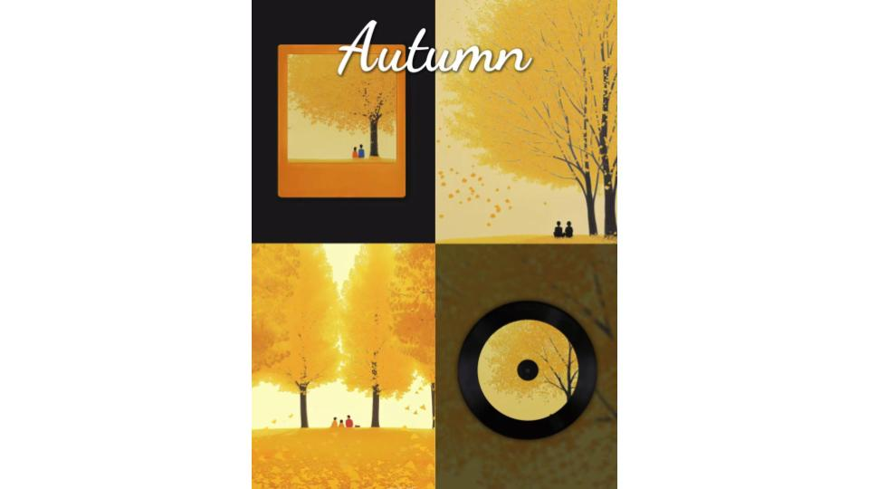

This section showcases my work in image editing. I’ve used tools like Adobe Photoshop and Illustrator to create stunning visuals. Below are examples of my projects:
- Advanced photo manipulation
- Custom graphic design
- Branding materials
Book Cover Inspiration and Design
The inspiration for my book cover came from the beauty and peacefulness of autumn, and I wanted to represent this season in four distinct ways. I created a montage consisting of four images that evoke different emotions and interpretations of autumn. The images are divided into two groups, each reflecting contrasting yet complementary perspectives on the season.
For the first and third images (top left and bottom left), I focused on the idea of autumn being captured in a single moment. To express this, I framed the images using a photograph border and a vinyl record. The photograph frame suggests that autumn can be seen as a frozen moment in time, a snapshot of beauty, while the vinyl record represents the notion that autumn can be like a song, with moments unfolding slowly, like music, extending through time in a harmonious and continuous way. Through these two approaches, I aimed to evoke a sense of nostalgia and reflect the transient nature of seasonal changes.
The second and fourth images (top right and bottom right) focus on the warmth and connections that autumn brings. I used soft, warm tones in these images to emphasize the comforting nature of this season. In the second image, the focus is on two individuals, suggesting the intimate moments shared between people as they experience the season together. The fourth image represents a family enjoying a peaceful day, highlighting the communal aspect of autumn, where shared moments with loved ones take center stage.
I used color contrast in all four images to highlight the vibrancy of the autumn leaves, which stand out against the muted backgrounds. The contrasting yet harmonious palettes in each image show both the quiet, reflective side of autumn, as well as the liveliness and warmth it brings.
Logo Design Description
I created a logo that represents a Chinese restaurant, using the iconic image of a panda, an animal that is closely associated with China and its culture. The panda in the logo is designed with a minimalistic yet playful style, making it easily recognizable and appealing.
The panda’s eyes are formed using a spoon and fork, symbolizing the restaurant's focus on food and dining. The overall circular shape of the panda's face suggests wholeness and unity, reflecting the communal and family-oriented aspect of dining in Chinese culture.
I chose black and white for the panda, maintaining its natural colors, while the utensils stand out as dark silhouettes. This use of simplicity ensures the logo remains clean. The smooth curves and lines of the panda’s face provide a welcoming and friendly feel, reinforcing the idea that the restaurant is a comfortable and approachable place to enjoy a meal.